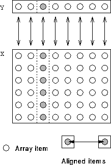

Can align one or more dimensions with a single element.
!HPF$ ALIGN (*,:) WITH Y(:) :: X
The * on the LHS of the WITH keyword, means that columns of X are not distributed. Each element of Y is aligned with a column of X.

i, X(:,i) is local to Y(i).
For more information, click here